flashdreams.accelerated#
flashdreams.accelerated is a low-level acceleration library used by
FlashDreams to build high-performance modules for streaming video models. It
currently contains two components:
Quantization Toolkit
Optimized Multi Head Attention
In the future, flashdreams.accelerated should be refactored into
flashdreams.core alongside CUDA graph capture, context parallelism,
disaggregated execution, additional low-level optimized kernels such as the
optimized multi-head attention implementation, and a possible autotuning
system. These building blocks will help FlashDreams achieve speed-of-light
performance across different platforms.
Quantization Toolkit#
The toolkit currently has two features:
Accelerated quantizer for tensor quantize and dequantize
Quantized linear layer
Accelerated Quantizer#
quantize quantizes a tensor to a specified dtype and scale granularity.
Target Dtype#
The supported target dtypes/formats are torch.float8_e4m3fn,
torch.float8_e5m2, and torch.int8.
For example, consider the floating-point vector
For INT8, \(M_{\mathrm{int8}} = 127\). Using one scale and rounding the scaled values to the nearest integers gives
The quantized vector is therefore \([80, 70, -127]\) with scale \(s \approx 0.005276\).
Scale Granularity#
For an input matrix \(X \in \mathbb{R}^{L \times D}\) and a target dtype \(t\), let \(M_t\) be the largest finite positive value that \(t\) can represent and let \(\epsilon\) be a small positive scale floor.
Per-tensor granularity computes one scale for the complete matrix:
Every element is divided by \(s_{\text{tensor}}\) before it is clipped to \([-M_t, M_t]\) and converted to \(t\).
{kind=link}
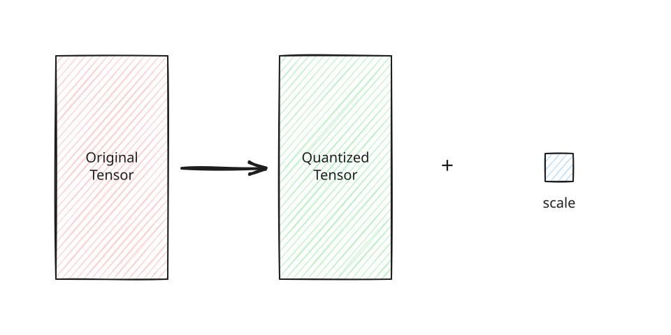
Tensor-wise quantization applies one shared scale to the complete tensor.#
Per-slice granularity computes a scale for every slice along the selected
axis. For a matrix, axis=0 reduces across rows and produces one scale per
column, while axis=1 reduces across columns and produces one scale per row:
Thus, axis=0 divides each \(X_{ij}\) by its column scale \(s_j\), and axis=1
divides it by its row scale \(s_i\).
{kind=link}
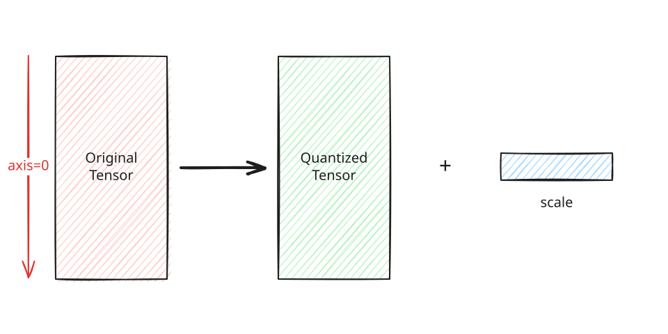
Slice-wise quantization with axis=0 applies one scale to each column.#
{kind=link}
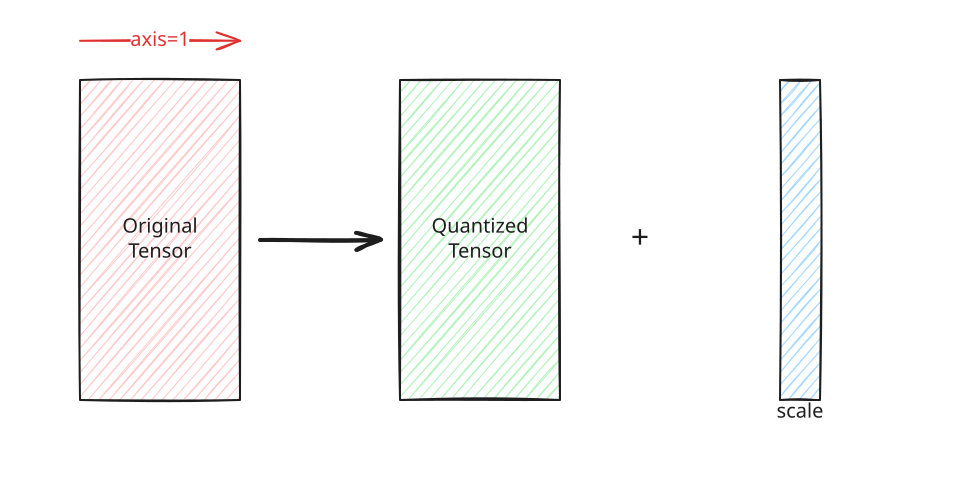
Slice-wise quantization with axis=1 applies one scale to each row.#
Using the same vector as the first column of a \((3, 2)\) matrix and adding a second column gives
Per tensor. One scale covers all six elements:
Per slice with axis=0. Reducing across the three rows produces one scale
for each of the two columns:
Per slice with axis=1. Reducing across the two columns produces one scale
for each of the three rows:
Why retain the scale for FP8 quantization? Although an FP16 or FP32 tensor can be cast directly to FP8, a direct cast does not adapt FP8’s limited representable range to the tensor’s magnitude. Dividing by the scale before conversion maps the tensor into \([-M_t, M_t]\) and uses more of the available FP8 range, preserving more precision. The scale must be kept to recover the original magnitude during dequantization or to incorporate it into a subsequent operation. This is especially important for quantized algorithms such as SageAttention, whose accuracy depends on applying the quantization scales correctly.
Planned: per-tile quantization. SageAttention also uses per-tile quantization, a powerful scheme that computes scales over individual tensor tiles. The Quantization Toolkit does not currently support this granularity; it is one of its most important missing features and should be planned for a future version.
{kind=link}
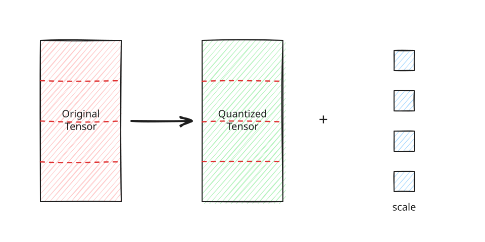
Tile-wise quantization applies a separate scale to each tile and is planned for a future version.#
CUDA tensors use the Triton implementation by default; CPU tensors use the Torch implementation. The quantizer performs scale computation in detached FP32 values. The returned scale tensor is FP32 and retains all input dimensions, with reduced dimensions kept at size one.
dequantize casts \(\bar X\) to the first scale’s dtype and applies every
provided scale in order with normal tensor broadcasting:
For example, the INT8 vector and scale from the earlier example are
Dequantization multiplies every quantized value by the scale:
The result approximates the original vector \([0.42, 0.37, -0.67]\). The small difference in the first two values comes from rounding during INT8 quantization.
It then casts the result to the requested output dtype (FP16 by default). With no scales, it directly casts \(\bar X\) to that dtype. This supports, for example, separately applying activation and weight scales after a GEMM.
Quantized GEMM#
For a quantized-GEMM example, let \(Q \in \mathbb{R}^{L \times D}\) and \(K \in \mathbb{R}^{S \times D}\) be token-major query and key matrices, with \(L\) query tokens, \(S\) key tokens, and feature width \(D\). Their full-precision score matrix is \(QK^\mathsf{T} \in \mathbb{R}^{L \times S}\). With tensorwise quantization, scalar scales \(s_Q\) and \(s_K\), and quantized matrices \(\bar Q\) and \(\bar K\), the scaled product is
{kind=link}
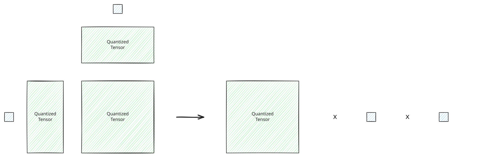
Tensor–tensor quantized GEMM combines the two scalar scales.#
With Granularity.SLICE and axis=-1, each token instead has a scale:
\(s_Q \in \mathbb{R}^{L \times 1}\) and
\(s_K \in \mathbb{R}^{S \times 1}\). The corresponding per-token result is
where \(s_Qs_K^\mathsf{T} \in \mathbb{R}^{L \times S}\) is the outer product of the query and key token scales and \(\odot\) is elementwise multiplication. These equations describe composing the tensor quantizer with a GEMM; the quantizer itself does not perform attention or provide a fused QK kernel.
{kind=link}
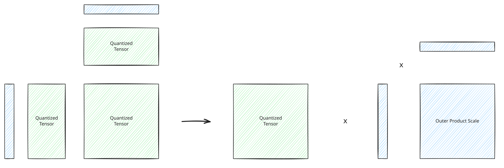
Slice–slice quantized GEMM applies the outer product of the slice scales.#
{kind=link}
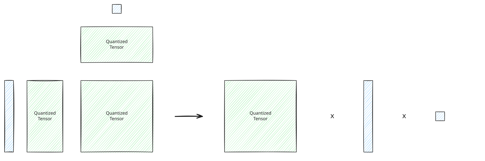
Slice–tensor quantized GEMM combines per-slice scales with one scalar scale.#
{kind=link}
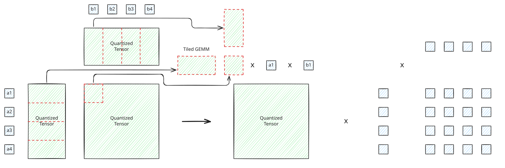
Tile–tile quantized GEMM scales and accumulates individual tile products. Tile granularity is planned and is not currently supported by the toolkit.#
Inner-dimension rule for slice-quantized GEMM. For \(C = AB\) with \(A \in \mathbb{R}^{M \times K}\) and \(B \in \mathbb{R}^{K \times N}\), the shared inner dimension \(K\) must be the quantization axis: use
axis=1for \(A\) andaxis=0for \(B\). This produces row scales \(s_{A,i}\) and column scales \(s_{B,j}\) that remain constant across each dot product, allowing \(C_{ij} \approx s_{A,i}s_{B,j}\sum_k \bar A_{ik}\bar B_{kj}\). If either scale varied with \(k\), it would have to stay inside the sum; a single scale applied after GEMM could not dequantize the accumulator correctly. For \(QK^\mathsf{T}\), both \(Q\) and the untransposed \(K\) store their shared feature dimension onaxis=1, so both are quantized withaxis=1. For token-major \(Q\) and \(K\), this produces one scale per token and is referred to as per-token quantization in the SageAttention paper. Transposing \(K\) then moves that dimension toaxis=0of the GEMM’s right operand, satisfying the same rule.
{kind=link}
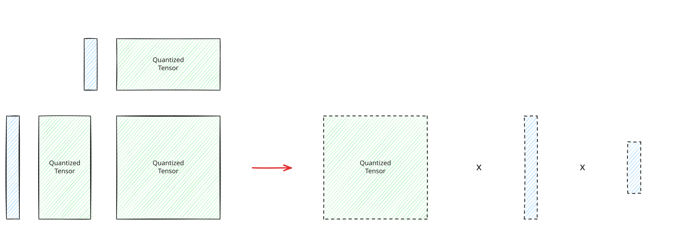
Invalid inner-dimension quantization cannot use a single post-GEMM scale.#
Worked Slice-Quantized GEMM#
This example quantizes \(A\) per row and \(B\) per column, accumulates their GEMM in INT32, and dequantizes the result with both scale tensors:
import torch
from flashdreams.accelerated.quantization.quantizer import (
Granularity,
dequantize,
quantize,
)
a = torch.tensor([[1.0, 2.0], [3.0, 4.0], [5.0, 6.0]])
# a: shape=(3, 2), dtype=torch.float32
b = torch.tensor([[7.0, 8.0, 9.0], [10.0, 11.0, 12.0]])
# b: shape=(2, 3), dtype=torch.float32
quantized_a, scale_a = quantize(
a, torch.int8, Granularity.SLICE, axis=1
)
# quantized_a: shape=(3, 2), dtype=torch.int8
# scale_a: shape=(3, 1), dtype=torch.float32
quantized_b, scale_b = quantize(
b, torch.int8, Granularity.SLICE, axis=0
)
# quantized_b: shape=(2, 3), dtype=torch.int8
# scale_b: shape=(1, 3), dtype=torch.float32
# Accumulate in INT32 so the INT8 products do not overflow.
quantized_c = torch._int_mm(quantized_a, quantized_b)
# quantized_c: shape=(3, 3), dtype=torch.int32
c = dequantize(
quantized_c, scale_a, scale_b, dtype=torch.float32
)
# c: shape=(3, 3), dtype=torch.float32
reference_c = a @ b
# reference_c: shape=(3, 3), dtype=torch.float32
assert quantized_a.tolist() == [[64, 127], [95, 127], [106, 127]]
assert quantized_b.tolist() == [[89, 92, 95], [127, 127, 127]]
assert quantized_c.tolist() == [
[21825, 22017, 22209],
[24584, 24869, 25154],
[25563, 25881, 26199],
]
assert scale_a.shape == (3, 1) # One scale per row of A.
assert scale_b.shape == (1, 3) # One scale per column of B.
torch.testing.assert_close(c, reference_c, rtol=0, atol=0.2)
print(c)
# tensor([[ 27.0631, 30.0312, 33.0471],
# [ 60.9684, 67.8428, 74.8585],
# [ 95.0946, 105.9053, 116.9526]])
Passing scale_a and scale_b separately to dequantize applies them with
normal broadcasting, combining each row scale from \(A\) with each column scale
from \(B\) without materializing their outer product.
Quantized Linear Layer#
QuantizedNonPersistentLinear constructs an inference projection from existing
weight \(W \in \mathbb{R}^{O \times I}\) and optional bias
\(b \in \mathbb{R}^{O}\). It keeps the derived quantized weight, bias, and
FP32 weight scale as nonpersistent buffers, so callers rebuild them from
checkpoint tensors rather than loading them from state_dict.
WeightGranularity.PER_OUT_CHANNEL quantizes each weight row with
Granularity.SLICE and axis=-1, giving a weight scale shaped \([O, 1]\).
WeightGranularity.TENSOR gives one \([1, 1]\) scale for all weights. The
supported weight granularities are deliberately limited to per-output-channel
and per-tensor quantization by the inner-dimension rule described above. In
\(XW^\mathsf{T}\), the input dimension \(I\) is the GEMM reduction dimension.
Per-output-channel scales and a tensorwise scale remain constant across \(I\)
and can therefore be applied after GEMM. A per-input-channel scale would vary
across \(I\), so it would have to remain inside the reduction and could not be
applied as a single post-GEMM scale. The layer accepts the same quantized
dtypes as the quantizer.
For activations \(X \in \mathbb{R}^{\ldots \times I}\), inference has two
paths. Passing a Granularity dynamically quantizes \(X\) with axis=-1.
Passing prequantized \(\bar X\) instead requires the layer’s activation dtype
and an FP32 tensorwise scale shaped \([1, \ldots, 1]\) or slice scale shaped
\([\ldots, 1]\). After flattening leading dimensions into GEMM rows, both
paths compute the scaled projection
where \(S_X\) broadcasts down output rows and \(S_W^\mathsf{T}\) broadcasts
across output columns. int8 uses an integer GEMM followed by application of
the activation and weight scales; FP8 uses scaled GEMM with those same scales.
The result is returned as out_dtype (FP16 by default), including after any
internal BF16 FP8 rowwise GEMM result is cast, and the optional bias is applied
in that output dtype.
Quantized Forward Example#
The layer can quantize a full-precision input during forward, or reuse an
input that was quantized beforehand:
import torch
from flashdreams.accelerated.quantization.linear import (
QuantizedNonPersistentLinear,
WeightGranularity,
)
from flashdreams.accelerated.quantization.quantizer import Granularity, quantize
weight = torch.tensor([[1.0, 2.0], [3.0, 4.0], [5.0, 6.0]])
layer = QuantizedNonPersistentLinear(
weight,
bias=None,
granularity=WeightGranularity.PER_OUT_CHANNEL,
dtype=torch.int8,
)
x = torch.tensor([[1.0, 2.0], [3.0, 4.0]])
# Quantize full-precision x inside the forward call.
dynamic_output = layer(x, Granularity.SLICE, out_dtype=torch.float32)
# dynamic_output: shape=(2, 3), dtype=torch.float32
# Quantize x once, then reuse it for the prequantized forward path.
quantized_x, x_scale = quantize(
x, layer.dtype, Granularity.SLICE, axis=-1
)
# quantized_x: shape=(2, 2), dtype=torch.int8
# x_scale: shape=(2, 1), dtype=torch.float32
prequantized_output = layer(
quantized_x, x_scale, out_dtype=torch.float32
)
# prequantized_output: shape=(2, 3), dtype=torch.float32
torch.testing.assert_close(dynamic_output, prequantized_output, rtol=0, atol=0)
The prequantized path is useful when several projections consume the same input. For example, the Q, K, and V projections in self-attention all consume the same \(x\), so its quantized tensor and scale can be shared across those forward calls.
Optimized Multi Head Attention#
Multi Head Attention Definition#
Let query tokens be \(X \in \mathbb{R}^{B \times L \times C_Q}\) and context tokens be \(C \in \mathbb{R}^{B \times S \times C_K}\), where \(B\) is the flattened leading batch/group size, \(L\) the query length, \(S\) the context length, \(H\) the number of heads, and \(d\) the head dimension. With inner width \(Hd\), the projections are
where each reshaped tensor has shape \([B, L, H, d]\) for \(Q\) or \([B, S, H, d]\) for \(K\) and \(V\).
Optional Q/K RMS normalization maps a feature vector \(z \in \mathbb{R}^{m}\) to
where \(\gamma \in \mathbb{R}^{m}\) is the learned elementwise weight. With head-scoped normalization, \(m=d\) and each head is normalized independently. With inner-scoped normalization, \(m=Hd\) and all heads for a token are normalized together. No normalization leaves Q and K unchanged. Let \(Q^{(n)}\) and \(K^{(n)}\) denote the resulting tensors; V is never normalized.
{kind=link}
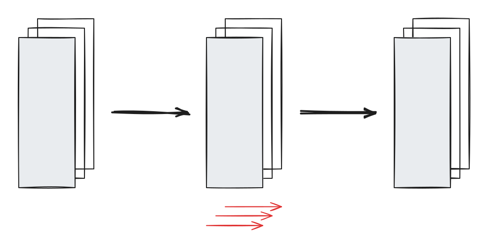
Head-scoped RMSNorm normalizes each attention head independently with \(m=d\).#
{kind=link}
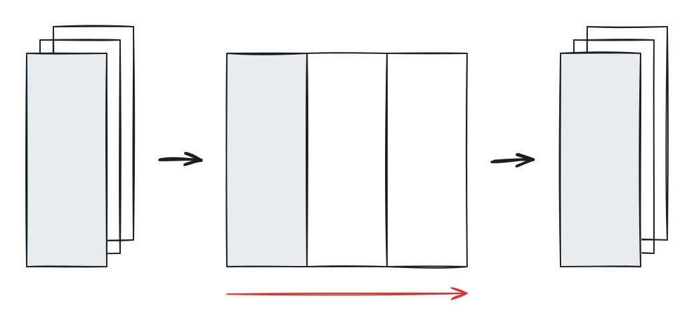
Inner-scoped RMSNorm normalizes the complete projected inner dimension with \(m=Hd\).#
For even \(d\), RoPE starts with geometrically spaced inverse frequencies. For a one-dimensional position and base \(\Theta\) (typically \(10000\)), pair \(r\) uses
Optional extrapolation changes the effective base \(\Theta\). Video models can
apply the same construction independently to temporal, height, and width
coordinates, allocate feature pairs to each axis, and concatenate the resulting
angles. FlashDreams receives these expanded angles as rope_freqs shaped
\([L,1,1,d]\). Given angle \(\theta_{p,r}\), RoPE rotates pair \(r\) as
Interleaved RoPE pairs \((a_r,b_r)=(2r,2r+1)\); split-half RoPE pairs \((a_r,b_r)=(r,r+d/2)\) for \(0 \le r < d/2\). Applying these rotations to \(Q^{(n)}\) and \(K^{(n)}\) gives \(Q^\star\) and \(K^\star\); disabling RoPE leaves them unchanged. V is not rotated.
{kind=link}
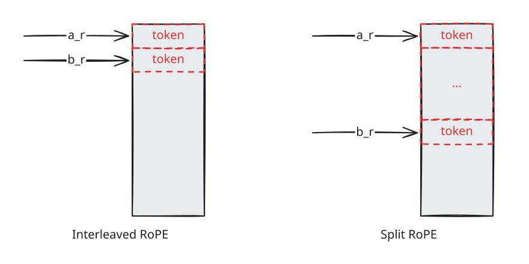
Interleaved RoPE pairs adjacent features; split-half RoPE pairs corresponding features from the two halves of the head dimension.#
Before the K/V cache update. RoPE is applied to the current key chunk before it is written, so the cache stores position-embedded K. At each autoregressive step, only the new query and key chunk is rotated; older cached keys already contain their embeddings and are reused without applying RoPE again.
{kind=link}
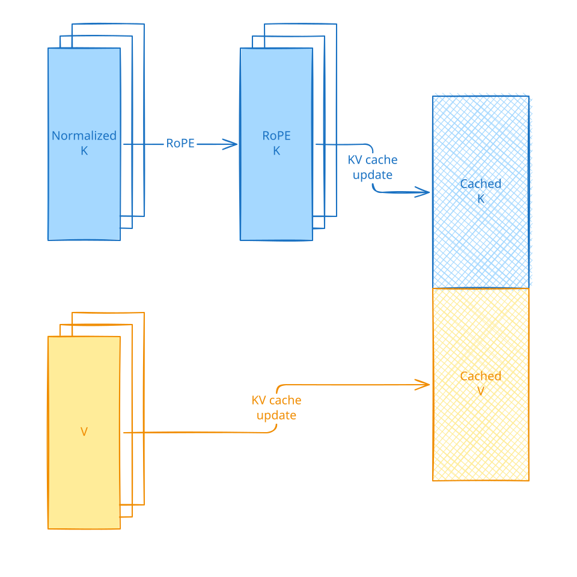
Before-cache RoPE writes position-embedded keys to the K/V cache.#
After the K/V cache update. The cache stores unrotated K. Immediately before attention, RoPE is applied to the current query and every visible cached key using angles for their current positions. The stored cache remains unrotated, so visible keys are rotated again on each autoregressive step.
{kind=link}
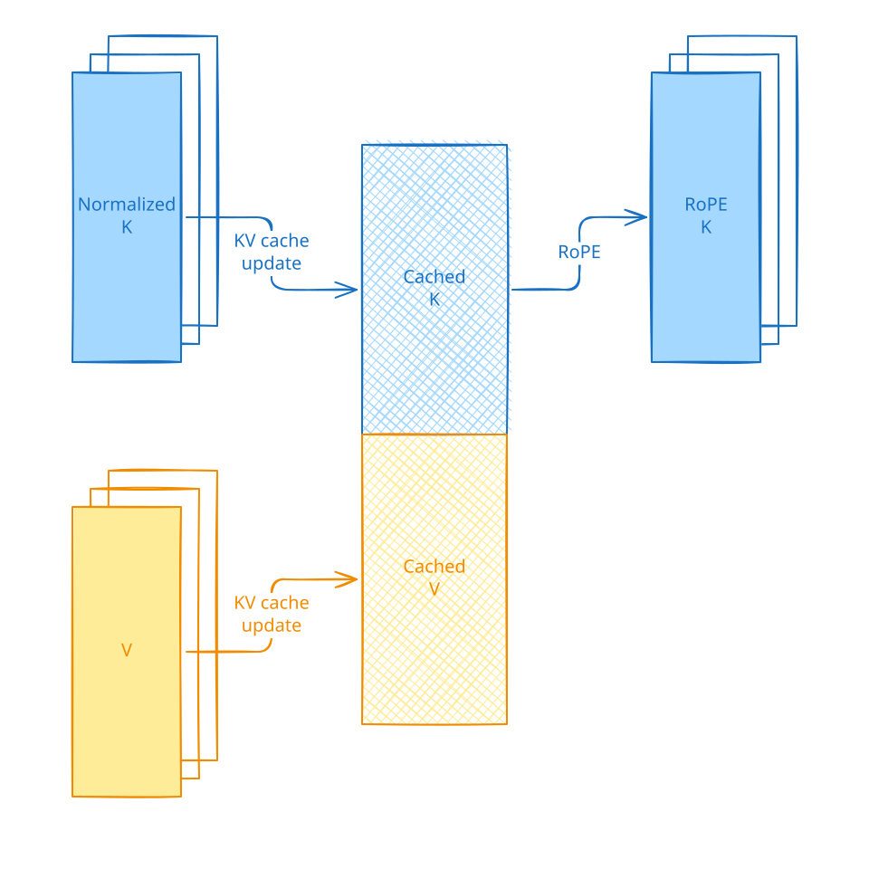
After-cache RoPE rotates visible keys while leaving cached keys unrotated.#
For head \(h\), scaled dot-product attention is
Implementations own the exact normalization and RoPE operation order; the reference below normalizes before applying RoPE as shown above. In self-attention, \(C = X\) and the current K/V chunk is written into a rolling cache before the score calculation. In cross-attention, K/V are precomputed from static \(C\) and reused for each query.
Q/K RMSNorm scope, RoPE pairing style, and RoPE cache-update scope are independent choices. They can be combined in any supported arrangement for both self-attention and cross-attention. See the Generic Multi Head Attention Interface for configuration details.
The following examples show self-attention with before-cache RoPE and cross-attention with after-cache RoPE.
{kind=link}
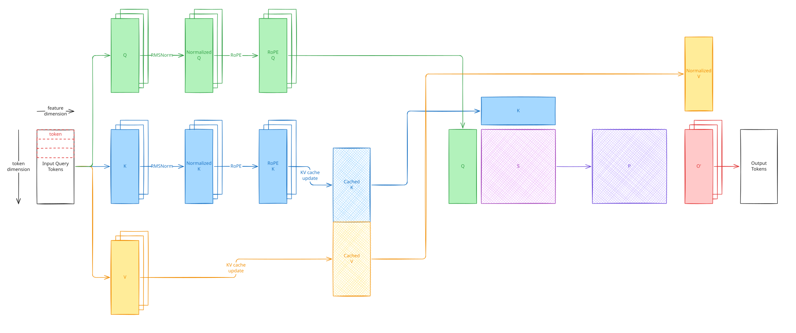
Self-attention with RoPE before the K/V cache update.#
{kind=link}
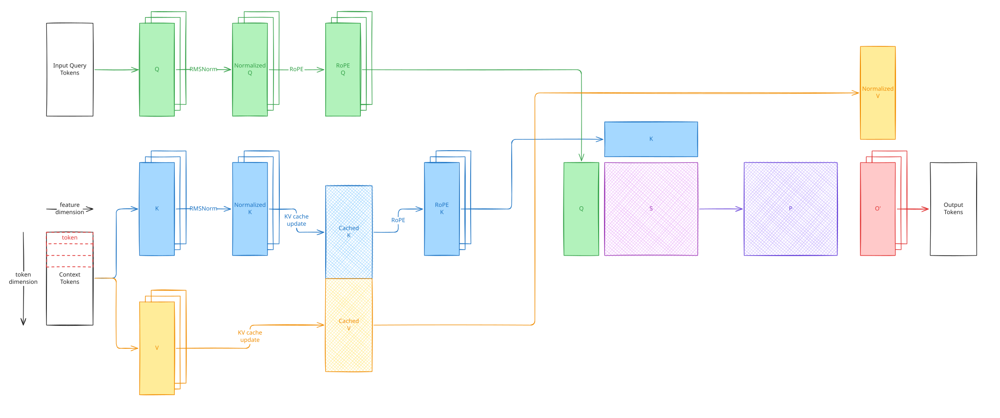
Cross-attention with RoPE after the K/V cache update.#
Generic Multi Head Attention Interface#
AttentionConfig describes the attention geometry through the query and
context widths, number of heads, and head dimension. It also exposes the
RMSNorm and RoPE policies. Q/K RMSNorm can be disabled, applied independently
per head, or applied across the complete projected inner dimension. RoPE can
be disabled or configured with split-half or interleaved feature pairing and
can run before or after the K/V cache update.
For example, Cosmos-Predict2.5 2B self-attention uses:
from flashdreams.accelerated.multi_head_attention import (
AttentionConfig,
QKNormScope,
RoPEConfig,
RoPEScope,
RoPEStyle,
)
cosmos_attention_config = AttentionConfig(
query_dim=2048,
context_dim=2048,
n_heads=16,
head_dim=128,
qk_norm_scope=QKNormScope.HEAD,
qk_norm_eps=1e-6,
rope_config=RoPEConfig(
style=RoPEStyle.SPLIT,
scope=RoPEScope.BEFORE_KV_CACHE,
),
)
WAN 2.1 1.3B self-attention uses:
from flashdreams.accelerated.multi_head_attention import (
AttentionConfig,
QKNormScope,
RoPEConfig,
RoPEScope,
RoPEStyle,
)
wan_attention_config = AttentionConfig(
query_dim=1536,
context_dim=1536,
n_heads=12,
head_dim=128,
qk_norm_scope=QKNormScope.INNER,
qk_norm_eps=1e-6,
rope_config=RoPEConfig(
style=RoPEStyle.INTERLEAVED,
scope=RoPEScope.BEFORE_KV_CACHE,
),
)
MultiHeadAttention is an adapter-friendly abstract interface. A concrete
implementation owns the Q, K, V, and output projection layers and the Q/K
RMSNorm modules. These modules must retain the checkpoint-native attribute
names so checkpoint loading resolves the expected parameter keys. The
implementation must also expose them through the query_projection,
key_projection, value_projection, output_projection, query_norm, and
key_norm properties required by the shared interface.
compute_kv(context, rope_freqs) projects a context and precomputes its K/V
cache, which is typically used to prepare static cross-attention context.
forward(x, kv_cache, rope_freqs) runs query tokens through the complete MHA
operation: projection, optional Q/K normalization, RoPE, an optional K/V cache
update, scaled dot-product attention, and output projection. Self-attention
updates and attends to the streaming rolling K/V cache, while cross-attention
attends to the context cache returned by compute_kv without updating it.
The caller owns the BlockKVCache lifecycle for streaming self-attention:
before_update(chunk_idx), forward, then after_update(chunk_idx). The
current query chunk writes its K/V into the rolling cache before it is queried.
Cross-attention instead calls compute_kv once for static context and reuses
the finalized cache without rolling-cache update bookkeeping.
For example, assume a model adapter has constructed concrete self_attention
and cross_attention modules and allocated self_kv_cache for the streaming
window:
# B: flattened batch size; L: query-chunk length; S: context/cache length.
# H: number of heads; d: head dimension; C_Q/C_C: query/context width.
# Streaming self-attention updates the rolling cache once per query chunk.
# query_chunks[i]: [..., L, C_Q].
# query_rope_freqs[i]: [R, 1, 1, d], or None when RoPE is disabled. R = L
# for before-cache RoPE; for after-cache RoPE, R covers the query and all
# visible cache positions.
# self_kv_cache K/V storage: [B, sink_size + window_size, H, d].
self_outputs = []
for chunk_idx, (query, rope_freqs) in enumerate(
zip(query_chunks, query_rope_freqs, strict=True)
):
self_kv_cache.before_update(chunk_idx)
output = self_attention(query, self_kv_cache, rope_freqs) # [..., L, C_Q].
self_outputs.append(output)
self_kv_cache.after_update(chunk_idx)
# self_outputs[i]: [..., L, C_Q].
# Visible cached K/V after each step: [B, S, H, d].
# Cross-attention projects static context once and reuses its cache.
# context: [..., S, C_C].
# context_rope_freqs: [S, 1, 1, d] for before-cache RoPE; otherwise None.
context_kv_cache = cross_attention.compute_kv(context, context_rope_freqs)
# context_kv_cache K/V tensors: [B, S, H, d].
cross_outputs = []
for query, rope_freqs in zip(query_chunks, query_rope_freqs, strict=True):
# query: [..., L, C_Q]; rope_freqs: [R, 1, 1, d] or None.
output = cross_attention(query, context_kv_cache, rope_freqs) # [..., L, C_Q].
cross_outputs.append(output)
# cross_outputs[i]: [..., L, C_Q].
TorchMultiHeadAttention Reference#
TorchMultiHeadAttention is the portable PyTorch reference implementation that
conforms to the interface above. It is primarily used as a correctness oracle
for OptimizedMultiHeadAttention.
OptimizedMultiHeadAttention#
OptimizedMultiHeadAttention is one highly optimized MHA implementation in
flashdreams.accelerated. It combines an optional Triton FlashAttention2
kernel, an optional PyTorch cuDNN SDPA backend, an optional native FP8 cuDNN
backend, fine-grained quantization of projections and attention, and several
Q/K/V projection-fusion schedules.
OptimizedImplConfig configures the algorithm used for each optimized
component. Except for numerical error introduced by quantization, these choices
do not change the mathematical MHA operation. They change how that operation is
scheduled and executed. It can be viewed as a deliberately small scheduling
DSL, analogous to a simplified Halide schedule.
qkv_fusion_option(QKVFusionOption, defaultFULL) controls the projection GEMM schedule.NONEruns independent Q, K, and V projections.FUSE_KVruns Q independently and concatenates the K/V weights into one projection. It supports different query and context widths.FULLruns one fused QKV projection for streaming self-attention. Static context projection still uses the derived fused KV projection. This option requires equal query and context widths.
sdpa_backend(SDPABackend, defaultCUDNN) selects the non-causal scaled-dot-product attention kernel.CUDNNuses PyTorch cuDNN SDPA for FP16/BF16 Q, K, and V. Whenquantized_sdpa=True, it instead uses the native cuDNN Frontend FP8 graph, which requiresnvidia-cudnn-frontendand must be warmed up before CUDA graph capture.FA2uses the bundled Triton FlashAttention2 implementation with token-major[B, L, H, D]queries and[B, S, H, D]keys and values.
use_tma(bool, defaultTrue) refines theFA2schedule. When enabled, the TMA FlashAttention2 kernel is selected only if the device, tensor layout, and alignment pass its support check; otherwise execution falls back to the pointer-based FlashAttention2 kernel. Setting it toFalsealways selects the pointer-based kernel. It has no effect on theCUDNNbackend.quantization(QuantizationOption) controls the precision schedule.projection(torch.dtype | None, defaultNone) quantizes the Q/K/V projection GEMMs when set totorch.float8_e4m3fn,torch.float8_e5m2, ortorch.int8. Weights use one scale per output channel, activations use one scale per input slice, and projection results return to the input FP16/BF16 dtype. The output projection remains in native precision.quantized_sdpa(bool, defaultFalse) directly casts Q, K, and V to unscaledtorch.float8_e4m3fn, stores K/V caches in that dtype, and runs the selected SDPA backend in FP8. The FA2 path also uses FP8 softmax probabilities for the P@V product. This is not an accuracy-preserving quantization scheme such as SageAttention3 and can make attention inaccurate, so validate quality for each model and workload.
All configurations require CUDA FP16/BF16 inputs, compute capability 9.0 or newer, and a power-of-two head dimension from 16 through 256.
Why do we need a scheduling language for optimized MHA? The generic MHA interface supports variants with different query and context widths, head counts, head dimensions, normalization scopes, RoPE styles, and RoPE cache scopes. A schedule that performs well for one variant may be less effective for another. Even within one model, self-attention and cross-attention have different projection, sequence-length, and cache-reuse behavior and can prefer very different schedules. The best schedule for the same MHA variant can also change across hardware platforms.
The benchmark-selected policies in
integrations_v2/omnidreams/benchmarks/cases.pymake these differences concrete:
Platform
Component
Implementation
Fusion
SDPA
TMA
Projection
FP8 SDPA
GB300
Self-attention
Optimized MHA
FULL
CUDNNOff
Native
On
GB300
Cross-attention
Optimized MHA
FUSE_KV
FA2On
Native
Off
RTX PRO 6000
Self-attention
Optimized MHA
FULL
FA2On
FP8 e4m3
On
RTX PRO 6000
Cross-attention
OmniDreams
N/A
N/A
N/A
N/A
N/A
On GB300, self-attention prefers native-precision projections with cuDNN FP8 SDPA, while cross-attention prefers fused KV projection with TMA FlashAttention2 in native precision. On RTX PRO 6000, self-attention instead prefers TMA FlashAttention2 with FP8 e4m3 projection and FP8 SDPA, while cross-attention remains on the checkpoint-native OmniDreams implementation. Treating
OptimizedImplConfigas a small scheduling language makes these choices easy to enumerate, benchmark, and select independently for every component and hardware platform.
Supporting flashdreams.accelerated in an Integration#
Quantization#
Use the APIs described in the Quantization Toolkit and
follow its examples directly. QuantizedNonPersistentLinear should be used as
the inference-time drop-in replacement for any regular nn.Linear layer; the
quantized forward example shows both dynamic and
prequantized activation paths.
Optimized MHA#
OptimizedMultiHeadAttention remains a generic interface: it does not know an
integration’s checkpoint parameter names, attention geometry, normalization,
or RoPE convention. Each integration provides a thin model adapter and lets the
shared implementation own projection fusion, quantization, K/V cache updates,
and SDPA dispatch.
1. Implement the model adapter#
Inherit OptimizedMultiHeadAttention separately for each self- or
cross-attention variant that has a different contract. The adapter must:
Pass the correct
AttentionTypeand architecture-specificAttentionConfigtosuper().__init__.Construct the Q, K, V, output, Q-norm, and K-norm modules using the exact attribute names and bias policy expected by the checkpoint.
Implement all six logical properties required by
MultiHeadAttention.Call
_initialize_derived_weights()after the canonical checkpoint modules exist. This builds nonpersistent fused or quantized execution weights and installs the hook that refreshes them after checkpoint loading.
For example, the OmniDreams self-attention adapter in
integrations_v2/omnidreams/impl/transformer/modules.py follows this
shape:
import torch.nn as nn
from flashdreams.accelerated.multi_head_attention import (
AttentionConfig,
AttentionType,
QKNormScope,
RoPEConfig,
RoPEScope,
RoPEStyle,
)
from flashdreams.accelerated.multi_head_attention.optimized import (
OptimizedImplConfig,
OptimizedMultiHeadAttention,
)
class OptimizedSelfAttention(OptimizedMultiHeadAttention):
@property
def query_projection(self) -> nn.Linear:
return self.q_proj
@property
def key_projection(self) -> nn.Linear:
return self.k_proj
@property
def value_projection(self) -> nn.Linear:
return self.v_proj
@property
def output_projection(self) -> nn.Linear:
return self.output_proj
@property
def query_norm(self) -> nn.Module:
return self.q_norm
@property
def key_norm(self) -> nn.Module:
return self.k_norm
def __init__(self, optimized_impl_config: OptimizedImplConfig) -> None:
attention_config = AttentionConfig(
query_dim=2048,
context_dim=2048,
n_heads=16,
head_dim=128,
qk_norm_scope=QKNormScope.HEAD,
qk_norm_eps=1e-6,
rope_config=RoPEConfig(
style=RoPEStyle.SPLIT,
scope=RoPEScope.BEFORE_KV_CACHE,
),
)
super().__init__(
attention_type=AttentionType.SELF_ATTENTION,
attention_config=attention_config,
optimized_impl_config=optimized_impl_config,
)
inner_dim = attention_config.inner_dim
self.q_proj = nn.Linear(2048, inner_dim, bias=False)
self.k_proj = nn.Linear(2048, inner_dim, bias=False)
self.v_proj = nn.Linear(2048, inner_dim, bias=False)
self.output_proj = nn.Linear(inner_dim, 2048, bias=False)
self.q_norm = nn.RMSNorm(128, eps=1e-6)
self.k_norm = nn.RMSNorm(128, eps=1e-6)
self._initialize_derived_weights()
Those values describe OmniDreams self-attention: 2048-wide tokens, 16 heads, 128 features per head, per-head Q/K RMSNorm, and split RoPE applied before the K/V cache update. Its cross-attention adapter exposes the same six properties but uses a different architecture policy:
omnidreams_cross_attention_config = AttentionConfig(
query_dim=2048,
context_dim=1024,
n_heads=16,
head_dim=128,
qk_norm_scope=QKNormScope.HEAD,
qk_norm_eps=1e-6,
rope_config=None,
)
Use nn.Identity for query_norm and key_norm when Q/K normalization is
disabled. With QKNormScope.HEAD, the RMSNorm width is head_dim; with
QKNormScope.INNER, it is n_heads * head_dim. The optimized base then
provides allocate_kv_cache, compute_kv, and the complete forward path.
Preserve any additional interface required by the integration’s existing call
sites; for example, OmniDreams also implements its context-parallel methods.
2. Select the adapter in each model component#
Instantiate the optimized adapter at the same point where the original
attention module was constructed. OmniDreams makes this choice independently
for self-attention and cross-attention in every transformer block, then passes
the corresponding OptimizedImplConfig into each adapter. The block’s forward
and cache lifecycle do not change because both implementations conform to the
same MHA interface.
3. Expose the optimization schedule to higher-level configuration#
An integration may hard-code one OptimizedImplConfig inside its concrete
adapter. That is valid, but it commits every model component and every hardware
platform to that one schedule. Prefer separate self-attention and
cross-attention fields on the integration’s network config:
from dataclasses import dataclass, field
from flashdreams.accelerated.multi_head_attention.optimized import (
OptimizedImplConfig,
QKVFusionOption,
SDPABackend,
)
@dataclass
class MyNetworkConfig:
self_attn_optimized_impl_config: OptimizedImplConfig = field(
default_factory=lambda: OptimizedImplConfig(
qkv_fusion_option=QKVFusionOption.FULL,
sdpa_backend=SDPABackend.FA2,
)
)
cross_attn_optimized_impl_config: OptimizedImplConfig = field(
default_factory=lambda: OptimizedImplConfig(
qkv_fusion_option=QKVFusionOption.FUSE_KV,
sdpa_backend=SDPABackend.FA2,
)
)
Thread these fields from the network config into every block and then into the concrete attention adapters. Platform-specific pipeline or runner configs can override them independently after benchmarking. This is the pattern used by OmniDreams: its GB300 and RTX PRO 6000 variants select different self-attention schedules, and the RTX PRO 6000 variant keeps its original cross-attention implementation. Exposing the schedules at this level avoids baking one hardware-specific result into the model architecture.
Future direction. FlashDreams should define a more general declarative, nested configuration system and scheduling DSL.
OptimizedImplConfigshould be refactored into that common DSL, and an autotuning system should be built around it to search schedules and replace the current manual performance tuning process.
Running, Testing, and Benchmarking#
Run all commands below from the repository root. Config inspection and CPU tests do not instantiate models. Actual OmniDreams runs and benchmarks require a supported NVIDIA GPU, access to the model assets, and the appropriate integration dependencies.
Run OmniDreams with different runner configs#
List every installed runner or inspect a resolved config without loading its model:
uv run --python 3.12 --package flashdreams-omnidreams flashdreams-run --help
uv run --python 3.12 --package flashdreams-omnidreams flashdreams-run \
--no-instantiate omnidreams-optimized-gb300
The accelerated-relevant runner configs are:
Runner |
Purpose |
|---|---|
|
Reference OmniDreams implementation. |
|
Compile and CUDA-graph performance preset. |
|
Optimized MHA schedule selected for GB300. |
|
Optimized MHA schedule selected for RTX PRO 6000. |
For example, run the GB300 preset in mp4 mode with the bundled example data:
uv run --python 3.12 --package flashdreams-omnidreams flashdreams-run \
omnidreams-optimized-gb300 mp4 \
--device cuda:0 \
--scenario.example-data true \
--scenario.example-data-uuid 239560dc-33d1-11ef-9720-00044bcbccac \
--scenario.total-blocks 120 \
--output.fps 30 \
--output.path outputs/omnidreams-optimized-gb300.mp4
Replace the runner name and output path to run a different preset.
Use --no-instantiate with any runner name to compare nested pipeline and
attention configs before launching GPU work.
Run correctness tests#
Run the CPU-safe accelerated tests first:
uv run --project flashdreams --group test pytest \
flashdreams/tests/accelerated -m ci_cpu
On a supported CUDA system, run the optimized MHA, quantization, and Triton kernel tests with:
uv run --project flashdreams --group test pytest \
flashdreams/tests/accelerated -m ci_gpu
Validate the OmniDreams adapter/config plumbing and benchmark plotting helpers on CPU with:
uv run --project integrations_v2/omnidreams --group test pytest \
integrations_v2/omnidreams/tests/test_transformer_attention_backend.py \
-m ci_cpu
uv run --project flashdreams --group test pytest \
scripts/benchmark/test_common.py -m ci_cpu
Run benchmarks directly with pytest#
The benchmarks are manual GPU tests. Run every accelerated quantization and MHA benchmark directly with:
uv run --project flashdreams --group test pytest \
flashdreams/benchmarks/accelerated \
-p no:manual_marker -m manual --benchmark-only -v
For the OmniDreams module, network, and pipeline benchmarks:
uv run --project integrations_v2/omnidreams --group test pytest \
integrations_v2/omnidreams/benchmarks \
-p no:manual_marker -m manual --benchmark-only -v
Direct pytest runs print results to the terminal. Add
--benchmark-json=<path> when a machine-readable result is required.
Run the scripts/benchmark workflows#
The scripts run pytest-benchmark, save JSON artifacts, and generate comparison plots. Run an individual benchmark family with:
./scripts/benchmark/flashdreams/accelerated/quantization/run.sh
./scripts/benchmark/flashdreams/accelerated/multi_head_attention/run.sh
./scripts/benchmark/omnidreams/run.sh
Run all default benchmark families, or opt into every supported exhaustive sweep, with:
./scripts/benchmark/run_all.sh
FLASHDREAMS_RUN_FULL_BENCHMARK=1 ./scripts/benchmark/run_all.sh
Recreate plots from saved default or full-sweep JSON without rerunning GPU measurements:
./scripts/benchmark/run_all_plot.sh
FLASHDREAMS_RUN_FULL_BENCHMARK=1 ./scripts/benchmark/run_all_plot.sh
Default artifacts are written below artifacts/benchmark/flashdreams and
artifacts/benchmark/omnidreams; exhaustive-sweep artifacts use a full
subdirectory. Record the commit, runner/config, GPU and software stack, warmup
policy, and benchmark JSON when comparing schedules. Results selected on one
platform should not be treated as portable performance claims.